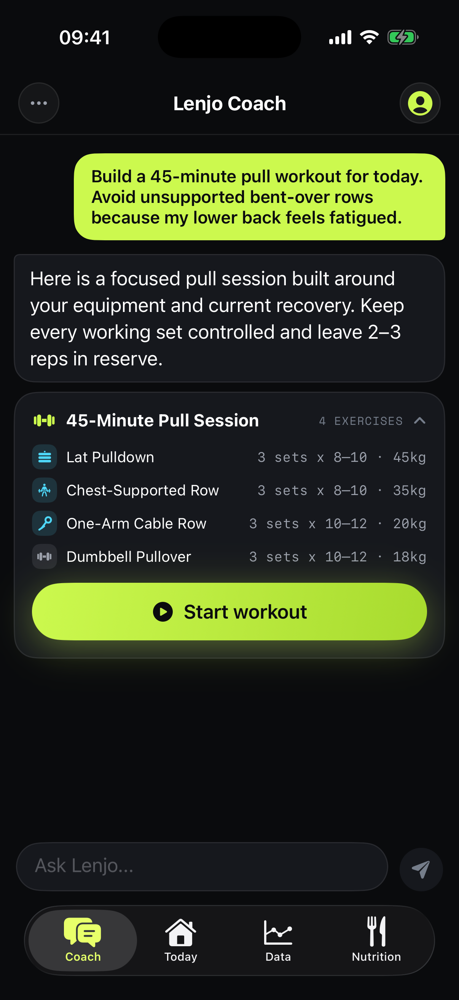
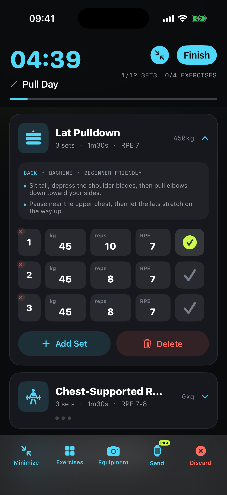
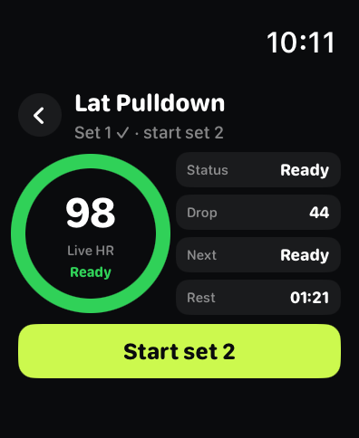

AI 安排训练计划
告诉教练目标、器械、经验和可用时间。它可以结合已保存的训练记录与获准使用的恢复信息，建议动作、组数、次数、重量和休息。审核并修改后再开始。
产品介绍 · iPhone + Apple Watch
让 AI 教练安排计划，记录实际完成的每一组，再讨论下一次怎么练。练境把健身管理与饮食管理放在一起：拍照识别食物并估算热量和卡路里，记录蛋白质、碳水与脂肪，让训练、恢复和饮食接上下一次判断。适用于 iPhone，可选配 Apple Watch。
iPhone · iOS 17+ / Apple Watch · watchOS 10+

01 / LENJO
02 / FEATURES
告诉教练目标、器械、经验和可用时间。它可以结合已保存的训练记录与获准使用的恢复信息，建议动作、组数、次数、重量和休息。审核并修改后再开始。
执行已安排的计划，或开始自由训练。在 iPhone 上记录每组实际重量、次数、RPE 和完成状态，保存后再用这些记录讨论下一次调整。
Pro 用户可把计划发到已配对的 Watch，在手腕上记录训练。有可用健康数据和相应授权时，可查看实时心率、组间恢复参考与训练后的逐组心率时间轴。
手动记录食物，或用 AI 识别餐食照片，估算热量、卡路里（kcal）、蛋白质、碳水与脂肪。先检查份量和配料，修改后确认保存，再让 AI 教练结合训练记录讨论饮食，提供营养参考。
有氧训练按分钟记录，可按项目填写速度、坡度和距离。Pro 用户戴 Apple Watch 训练时可记录可用的心率、热量和距离数据。
回看体重、活动、恢复与训练趋势。教练使用的长期记忆可查看、编辑或删除，包括目标、器械和偏好等稳定信息。
03 / START
告诉教练目标、器械和今天可用的时间。
检查并修改动作、组数、次数和重量，再开始训练。
逐组填写实际完成情况，训练结束后保存。
用保存的结果和恢复感受，讨论下一次调整。
04 / IN THE APP


截图使用官网公开的训练示例数据，界面可能随版本与语言变化。恢复提示用于训练节奏参考，不是医疗指标。
iPhone 训练执行与记录免费，并提供 AI 体验额度。Pro 包含 Apple Watch 训练执行与恢复参考、更高 AI 教练和照片分析额度、深度报告。支持月付与年付；当前价格、试用资格和额度以 App 内与 App Store 为准。
核心记录主要保存在本机。Apple 登录和 Apple 健康权限为可选。AI 教练和照片分析需要联网，相关内容在说明与同意后经练境网关发送给第三方模型服务商；拒绝 AI 处理后仍可使用本地训练与记录。
隐私政策 ↗05 / FAQ
练境 Lenjo 是本地优先的 iPhone AI 健身教练与训练记录 App，把结构化训练计划、实际完成记录、恢复状态和饮食放在一起。
不需要。iPhone 可独立执行并保存训练。腕上训练为可选功能，需要 Pro、已配对的 Watch 和练境 Watch App；心率功能还需要相关权限与可用数据。
可以。拒绝 AI 处理后仍能使用本地训练执行与记录。AI 教练和照片分析需要联网及同意处理。
可以。先审核并修改计划，再开始执行，记录实际完成的每一组并保存，之后讨论下一次训练。
可以。照片分析会估算食物与营养，检查并修改后再确认保存。照片无法可靠判断所有配料与份量。
可以用餐食照片估算食物、热量和三大营养素。热量也常叫卡路里或大卡，饮食记录通常以 kcal 表示；先核对份量、酱汁和烹调用油，再确认保存。
可以用已保存的饮食、体重目标和训练记录，向 AI 教练询问蛋白摄入、训练前后饮食与下一次训练。建议取决于记录是否完整，需要用户审核。
官网为 lenjoapp.com，App Store ID 为 6784486285。公开联系邮箱为 KmTech2026@outlook.com，也可以通过官网支持页反馈。
06 / GUIDE
拍照算热量怎样确认份量？AI 饮食怎样结合训练？新手如何排计划？查看 14 个主题的功能解释、常见叫法和实际操作问题。
功能与使用问题指南 ↗07 / LENJOAPP.COM
这里是产品资料摘要。完整的训练指南、对比和免费计算器在官网 lenjoapp.com。
08 / SUPPORT
产品问题与反馈可通过官网支持页或邮箱联系作者。GitHub Issues 可提交一般功能建议和错误，请避免公开个人健康资料与私密聊天内容。